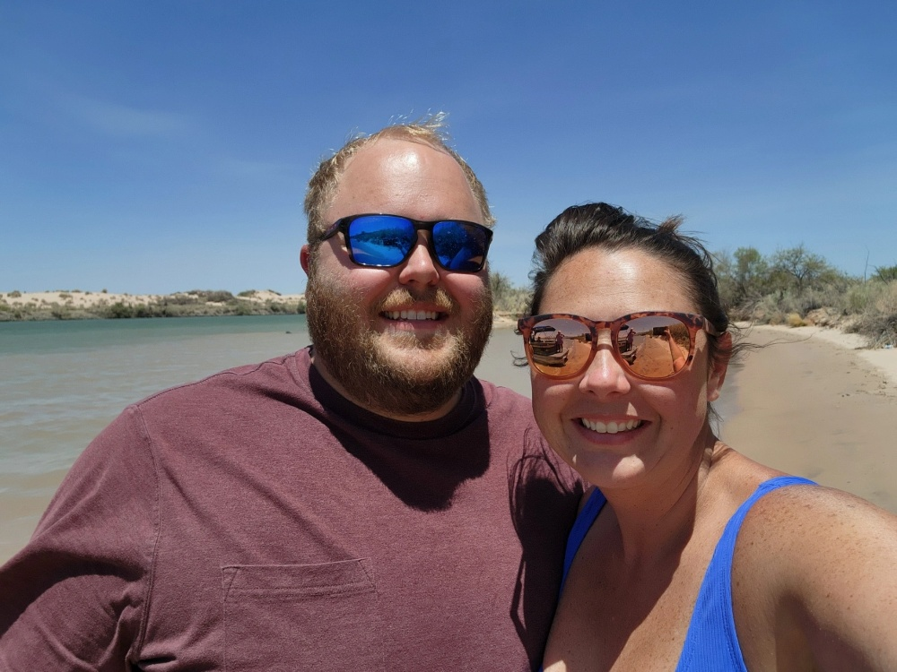

Cody Halterman
About Me
My name is Cody. I have lived in Tooele, Utah for over 20 years. I am currently working on a Bachelor's degree in software development. My wife and I have been married for almost 9 years. Together we have two children who are 5 and 4, and we adopted two pitbulls about a month ago.
Lake Havasu City, AZ
Lake Havasu City is the go to destination for many of those who live in Southern California. My wife grew up going there most weekends and as such I have been going several times a year since I have known her.